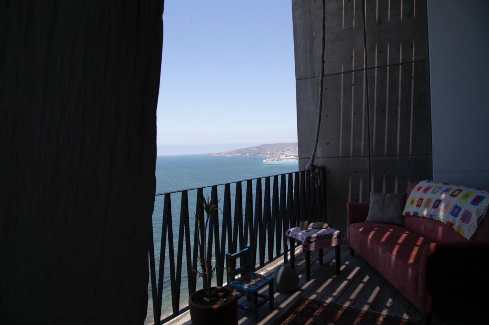

7 Fotos
Estudio remodelado por Claclá Taller de Arquitectura.
Empiezo con una vista de conjunto a partir de un render para entender el espacio (porque los espejos en paredes y plafón dificultan entenderlo en las fotos). Se aprecian las camas sobre y debajo del tapanco. Los baños están a espaldas de cada cama.

Abajo aparecen los dormitorios, la cama de arriba a la izquierda, las de abajo a la derecha. En ambas fotos están cerradas las cortinas pesadas que subdividen la sala de las habitaciones y permiten dormir a oscuras.
 |
 |
Aquí la cama de arriba, desde otro ángulo, con las cortinas abiertas.

Abajo de esta línea la cocina/comedor.
 |
 |
Y el comedor visto desde la terraza, con las recámaras al fondo y la sala en medio.

La sala de noche

El estudio cuenta con dos baños completos.
 |
 |
La terraza tiene vista envidiable, directa al mar.
 |
 |
Aquí una vista del edificio, casi terminado pero con pendientes importantes.


Ir arriba